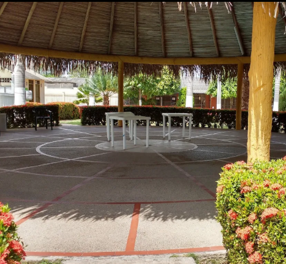
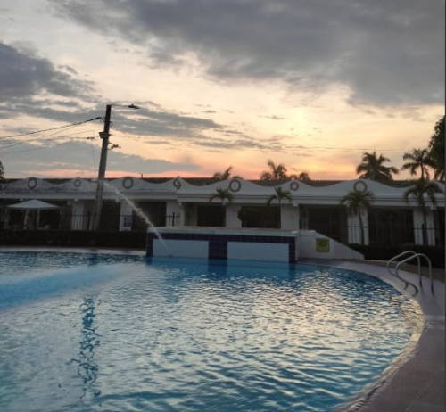
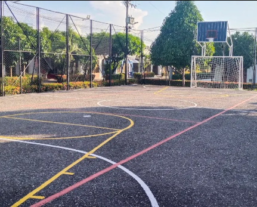
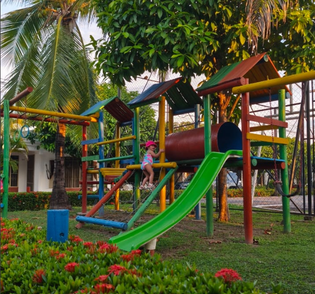
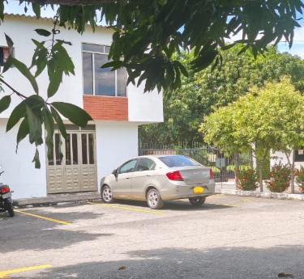

Servicios del Conjunto
En Pakistan V contamos con diversos servicios que mejoran la calidad de vida de nuestros residentes. Desde espacios para el esparcimiento y la actividad física, hasta facilidades para visitantes y soluciones de movilidad interna, trabajamos constantemente para mantener el bienestar y la convivencia de la comunidad.


Piscina
Horario 09:00 a 21:00

Cancha
Horario 09:00 a 21:00

Parque Infantil
Espacio para niños de 0 a 12 años. Uso bajo supervisión para menores de 7 años. Horario: lunes a viernes 8 a.m. - 6 p.m.; fines de semana hasta 7 p.m.

Parqueaderos de Visitantes
Parqueaderos de Visitantes